.jpg){kind=link}
Acadia National Park Travel Guide
Located along the mid-section of the Maine coast, the park preserves the natural beauty of the rocky headlands, including the highest mountains along the Atlantic coast
General Information
From Portland: Get on I-295 N/US-1 N from Elm St. Follow I-295 N and I-95 N to US-1A E/Wilson St in Brewer. Take exit 6A from I-395 E. Follow US-1A E, ME-3 E/Bar Harbor Rd and ME-198 S to ME-233 E in Mount Desert.
Overview
Acadia National Park on the mid-Maine coast, next to Bar Harbor, protects about half of Mount Desert Island, part of Isle au Haut, the tip of the Schoodic Peninsula, and portions of 16 smaller islands, a total of about 49,000 acres. It is the only national park in New England and one of the most visited in the country. Its landscape of rounded granite mountains, cobble and sand beaches, spruce forests, freshwater lakes, and rocky coast is the meeting point of mountains and the sea. Cadillac Mountain, at 1,530 feet, is the tallest mountain on the Atlantic coast of the United States, and its summit is one of the first places in the country to see the sunrise for part of the year.
The Wabanaki people have lived here for more than 10,000 years, followed by European fur traders and 19th-century artists and summer visitors, including wealthy families such as the Rockefellers. George B. Dorr, the "Father of Acadia," and others worked to protect the land, which was first set aside in 1916 as Sieur de Monts National Monument, became Lafayette National Park in 1919, and was renamed Acadia in 1929, the first national park east of the Mississippi River. John D. Rockefeller Jr. built the 45-mile network of carriage roads. People visit for the scenic drive, the coastal views and hikes, the carriage roads, the lobster and seafood of nearby towns, and the fall color.
Park Sections
The park has several distinct areas. The eastern side of Mount Desert Island, closest to Bar Harbor, has most of the attractions, including the Park Loop Road, Sand Beach, Thunder Hole, Jordan Pond, and Cadillac Mountain. The western, or "Quiet Side," around Southwest Harbor has Acadia Mountain, Echo Lake, and Bass Harbor Head Light. The Schoodic Peninsula is on the mainland, about an hour from Bar Harbor, and the Isle au Haut and Baker Island are reached by boat.
Sightseeing and Exploring the Park
The 27-mile Park Loop Road is the main scenic drive, passing Sand Beach, Thunder Hole, Otter Cliff, Jordan Pond, and the Cadillac Summit Road, a 3.5-mile spur to the top of Cadillac Mountain, where a timed vehicle reservation is required in season. Parts of the loop road are one-way. Other sights include the Bass Harbor Head Light at sunset, Somes Sound, a fjord-like inlet, and the Jordan Pond House, known for tea and popovers. The Schoodic Loop Road, on the mainland, offers quieter coastal views.
Hiking
The park has about 158 miles of hiking trails. Easy options include the Ocean Path (about 4.4 miles round trip) from Sand Beach to Otter Cliff, the Jordan Pond Path (3.3 miles loop), and the Bar Island Trail, a walk across a gravel bar at low tide. Moderate hikes include the Bubbles, Beech Mountain, and Great Head. The Precipice Trail and the Beehive are strenuous climbs with iron rungs and ladders along cliffs, and the Precipice closes in spring and summer to protect nesting peregrine falcons. Fog and wet rock can make trails slippery.
Other Activities
The 45 miles of carriage roads are closed to cars, and they are ideal for biking, walking, horseback riding, and, in winter, cross-country skiing, with stone bridges along the way. Other activities include sea kayaking, whale-watching and puffin cruises from Bar Harbor, swimming at Sand Beach and Echo Lake, tide pooling, sailing, ranger programs, and stargazing, including the annual Acadia Night Sky Festival. Museums include the Abbe Museum and the Wild Gardens of Acadia. Bike rentals and tours are available in Bar Harbor.
Flora and Wildlife
Acadia's forests are mainly red spruce, balsam fir, birch, and maple, with pitch pine and heath on the summits, and the fall foliage in October is a major draw. Wildlife includes white-tailed deer, red foxes, beavers, and, rarely, moose, along with peregrine falcons, bald eagles, ospreys, and many songbirds. On the shore, harbor seals, tide pool creatures, and seabirds are common, and offshore cruises show whales, porpoises, and puffins. Acadia is also a popular destination for birdwatching, especially during spring and fall migration. Viewing is on your own, with ranger programs in season.
Access
The park is on Mount Desert Island, reached by car from Ellsworth on Maine Route 3, crossing a bridge to the island. Bar Harbor is about 50 minutes from Ellsworth. Bangor International Airport is about an hour away, and the small Hancock County-Bar Harbor Airport near Trenton has limited service. Portland is about 3 hours (160 miles) and Boston about 5.5 hours (270 miles) from the park. Seasonal ferries and cruise ships also call at Bar Harbor. Parking at popular sites is limited in summer, and a free Island Explorer bus serves the park (see below).
Seasons
The peak season runs from July to October. Summer is cool and comfortable but foggy at times, and it is crowded in Bar Harbor, while fall brings colorful foliage, especially in October, and the biggest crowds on weekends. Spring is quiet, with many facilities opening in late May. Winter is cold and snowy, and the Park Loop Road is partly closed from about December to mid-April, though the carriage roads and trails are open for skiing and snowshoeing. Many shops and restaurants in Bar Harbor close in winter. Check the park website for the Cadillac Summit Road reservation rules.
Camping and Lodging
The park has campgrounds at Blackwoods near Bar Harbor, Seawall on the Quiet Side, Schoodic Woods on the mainland, and the primitive Duck Harbor on Isle au Haut, and reservations are strongly recommended. There is no lodging in the park other than the Jordan Pond House restaurant. Bar Harbor, just outside, has the most lodging, including the Bar Harbor Inn, the Harborside Hotel, the Balance Rock Inn, and many B&Bs and motels. Southwest Harbor, Northeast Harbor, and Winter Harbor offer quieter inns, and Ellsworth, about 30 minutes away, has chain hotels.
Visitor Centers
The Hulls Cove Visitor Center near Bar Harbor is the main visitor center, with exhibits, a film, a bookstore, and the start of the Park Loop Road, and it is open from spring through fall. The Thompson Island Information Center on Route 3 also provides information in season. The Sieur de Monts Nature Center has exhibits about the park's nature, and the Schoodic Woods Visitor Contact Station serves the mainland. Park headquarters at Eagle Lake is open year-round. Hours vary by season, so check the National Park Service website.
Shuttle System
The free Island Explorer bus system, which operates from late June to mid-October, serves Acadia National Park, Bar Harbor, and nearby villages on Mount Desert Island and the Schoodic Peninsula. Routes connect hotels, campgrounds, and the village green in Bar Harbor with major trailheads, beaches, Jordan Pond, Sand Beach, and the carriage roads, and some buses carry bicycles. Using the bus avoids parking problems and allows one-way hikes. Schedules and routes change by year, so check current information.
Top Sights
- Park Loop Road: a 27-mile scenic drive past Sand Beach, Thunder Hole, Otter Cliff, Jordan Pond, and Cadillac Mountain
- Cadillac Mountain: sunrise and sweeping views; summit road vehicle reservations are required in season
- Beaches and lakes: Sand Beach and Echo Lake for swimming, and Jordan Pond
- Hiking: Precipice, Ocean Path, Bubbles, and Acadia Mountain
- Carriage roads: car-free roads for biking and walking, with stone bridges
- Lighthouses: Bass Harbor Head and Baker Island
- Islands and peninsulas: Schoodic, Isle au Haut, and the Cranberry Isles
- Culture: the Abbe Museum, the Wild Gardens, and Sieur de Monts
Good to Know
- Passes: an entrance pass is required, and Cadillac Summit Road needs a separate timed vehicle reservation
- Season: the peak is July to October, and fall foliage is popular; the Park Loop Road is partly closed in winter
- Getting around: a free Island Explorer bus serves the park and Bar Harbor in season
This article uses material from the Wikipedia article "Acadia National Park", which is released under the Creative Commons Attribution-Share-Alike License 3.0. Additional information comes from the National Park Service Acadia National Park website.
Featured Locations
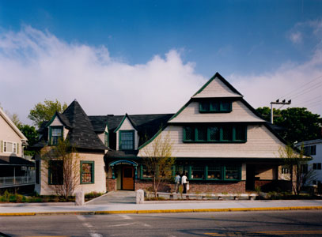
AbbeMuseum, CC BY-SA 4.0, via Wikimedia Commons; Image Size Adjusted

Abbe Museum
Museum dedicated to preserving and interpreting the history, cultures, and contemporary lives of the Wabanaki Nations through exhibits, artifacts, and educational programs.
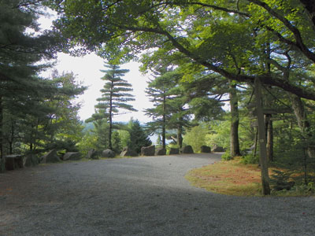
Kevin A. Trostlederivative work: User:Maps and stuff (cropped to 3:2 ratio eliminating some excess road surface and some overexposed sky, and focusing more on the road and the stones ("Rockefeller's teeth") by the roadside; slightly decreased saturation and contrast; slightly increased brightness in darker areas; saved as a high quality JPG), CC BY-SA 3.0, via Wikimedia Commons; Image Size Adjusted
.jpg){kind=link}
Acadia Carriage Roads
Historic network of crushed-stone roads designed for walking, biking, horseback riding, and scenic recreation, featuring stone bridges and views of forests, lakes, and mountains.
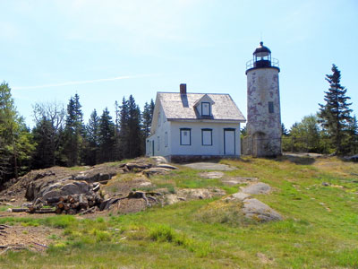
Kevin A. Trostle, CC BY-SA 3.0, via Wikimedia Commons; Image Size Adjusted

Baker Island
Island destination featuring a historic lighthouse, preserved homestead remains, coastal scenery, and walking opportunities focused on maritime and cultural history.

Bass Harbor Head Light
Lighthouse located within Acadia National Park in the southwest portion of Mount Desert Island, marking the entrance to Bass Harbor and Blue Hill Bay
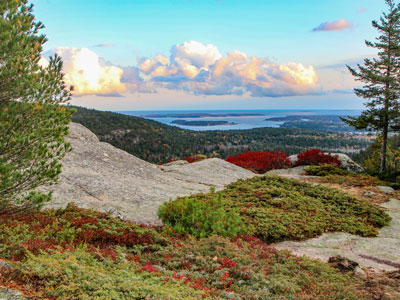
English: Victoria Stauffenberg, Public domain, via Wikimedia Commons; Image Size Adjusted
.jpg){kind=link}
Beech Mountain Trail
Short summit hike featuring panoramic views, exposed granite slopes, a historic fire tower, and scenic overlooks of surrounding lakes and mountains.
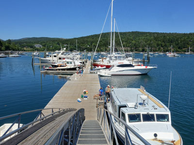
Daderot, CC0, via Wikimedia Commons; Image Size Adjusted

Great Cranberry Island
Quiet island community offering maritime history, walking trails, scenic shoreline views, cultural attractions, and a glimpse into traditional coastal island life.
The Bubbles
Popular mountain hike featuring panoramic views, exposed granite summits, a glacial erratic known as Bubble Rock, and scenic overlooks of Jordan Pond and surrounding peaks.
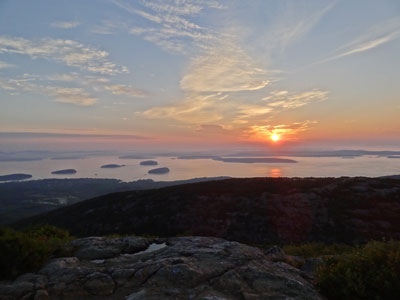
Peetlesnumber1, CC BY-SA 3.0, via Wikimedia Commons; Image Size Adjusted

Cadillac Mountain
Located within Acadia National Park, its summit is the highest point within 25 miles (40 km) of the Atlantic shoreline and known as the first place in the U.S. to see the sunrise
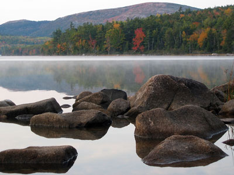
National Park Service / uncreditedderivative work: User:Maps and stuff (cropped to 3:2 ratio removing upper part of image), Public domain, via Wikimedia Commons; Image Size Adjusted

Eagle Lake
Popular mountain hike featuring panoramic views, exposed granite summits, a glacial erratic known as Bubble Rock, and scenic overlooks of Jordan Pond and surrounding peaks.
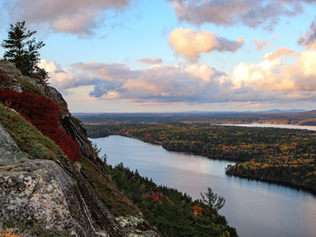
English: Victoria Stauffenberg, Public domain, via Wikimedia Commons; Image Size Adjusted
.jpg){kind=link}
Echo Lake
Freshwater lake destination with a sandy swimming beach, scenic mountain views, clear waters, picnicking opportunities, and easy access to hiking and recreation in Acadia National Park.
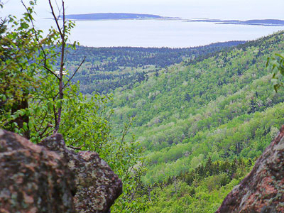
JRLibby, CC BY-SA 3.0, via Wikimedia Commons; Image Size Adjusted

Gorge Path
Steep mountain trail that follows a narrow gorge between two peaks, featuring stone stairways, rocky terrain, small waterfalls, and shaded forest scenery.
Great Head Trail
Coastal loop hike featuring dramatic ocean cliffs, rocky headlands, historic ruins, forest sections, and panoramic views of the Atlantic coastline.
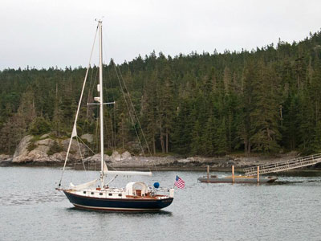
HopsonRoad, CC BY-SA 4.0, via Wikimedia Commons; Image Size Adjusted

Isle au Haut
Remote island section of Acadia National Park featuring rugged coastal scenery, forested hiking trails, secluded coves, historic fishing communities, and wilderness camping opportunities.
Jordan Pond
Crystal-clear glacial lake surrounded by mountain scenery, carriage roads, hiking trails, wildlife viewing opportunities, and the historic Jordan Pond House.
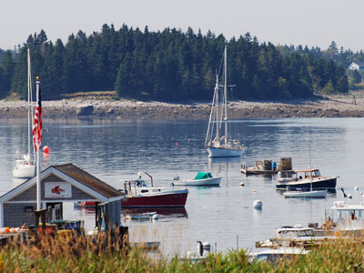
Harvey Barrison from Massapequa, NY, USA, CC BY-SA 2.0, via Wikimedia Commons; Image Size Adjusted
.jpg){kind=link}
Little Cranberry Island
Quiet island community offering scenic coastal views, working lobster harbors, historic museums, art galleries, walking paths, and an authentic Maine island experience surrounded by the waters of Frenchman Bay.
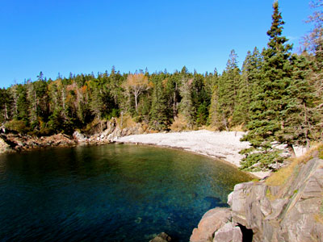
Jeff Gunn from Atlanta, USA, CC BY 2.0, via Wikimedia Commons; Image Size Adjusted
.jpg){kind=link}
Little Hunters Beach
Secluded cobblestone beach known for its wave-polished stones, rugged shoreline scenery, and the distinctive sounds created by surf rolling across the rocks.
Otter Cliff
Towering pink granite sea cliffs rising more than 100 feet above the Atlantic Ocean, offering dramatic coastal views and one of the most scenic overlooks in the park.
Otter Cove Overlook
Roadside scenic viewpoint overlooking dramatic granite sea cliffs, rocky shoreline formations, and sweeping views of the Atlantic Ocean.
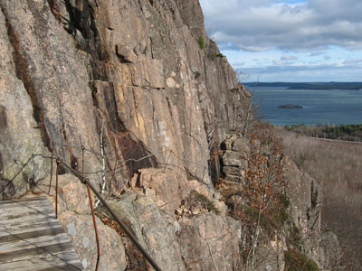
Fredlyfish4derivative work: User:Maps and stuff (rotated 2.5 degrees clockwise to level horizon; cropped white space after rotation, to same 4:3 ratio of original; increased brightness in darker areas; saved as a high quality JPG), CC BY-SA 4.0, via Wikimedia Commons; Image Size Adjusted
.jpg){kind=link}
Precipice Trail
Challenging mountain route featuring exposed cliff faces, iron rungs, granite ledges, and panoramic summit views across mountains, forests, and the Atlantic coastline.
Sand Beach
Wide sandy ocean beach framed by granite headlands, offering surf, scenic mountain views, and one of the most accessible shorelines in the park.
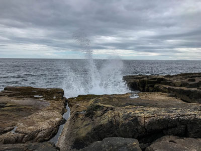
Brian W. Schaller, FAL, via Wikimedia Commons

Scoodic Peninsula
Mainland section of the national park featuring rugged granite shorelines, scenic ocean vistas, forested landscapes, quiet hiking trails, and powerful Atlantic surf.
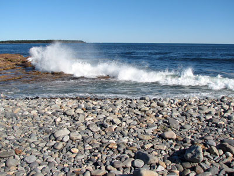
James St. John, CC BY 2.0, via Wikimedia Commons; Image Size Adjusted
_15.jpg){kind=link}
Seawall
Natural shoreline of wave-shaped granite ledges, cobble beaches, and coastal forest offering expansive views of the Atlantic Ocean and nearby offshore islands.
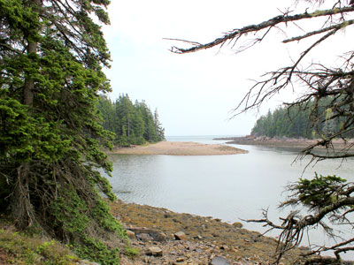
Aaron Zhu, CC BY-SA 3.0, via Wikimedia Commons; Image Size Adjusted

Ship Harbor Trail
Easy coastal loop trail winding through evergreen forest, shoreline habitats, tidal mudflats, and rocky ocean overlooks with abundant birdwatching opportunities.
Thunder Hole
Natural rock inlet where incoming waves force air and water through a narrow sea cave, creating dramatic splashes and a thunder-like roar under the right conditions.
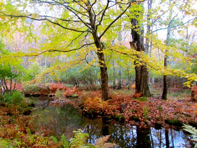
Jeff Gunn from Atlanta, USA, CC BY 2.0, via Wikimedia Commons; Image Size Adjusted
.jpg){kind=link}
Wild Gardens of Acadia
Living botanical exhibit featuring more than 400 native plant species displayed within recreated habitats representing local forests, wetlands, mountains, and coastal environments.
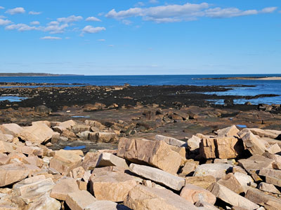
Jeff P from Berkeley, CA, USA, CC BY 2.0, via Wikimedia Commons; Image Size Adjusted
.jpg){kind=link}
Wonderland Trail
Coastal loop trail featuring rocky shoreline, ocean views, and forest paths with easy access to classic Acadia seaside scenery.
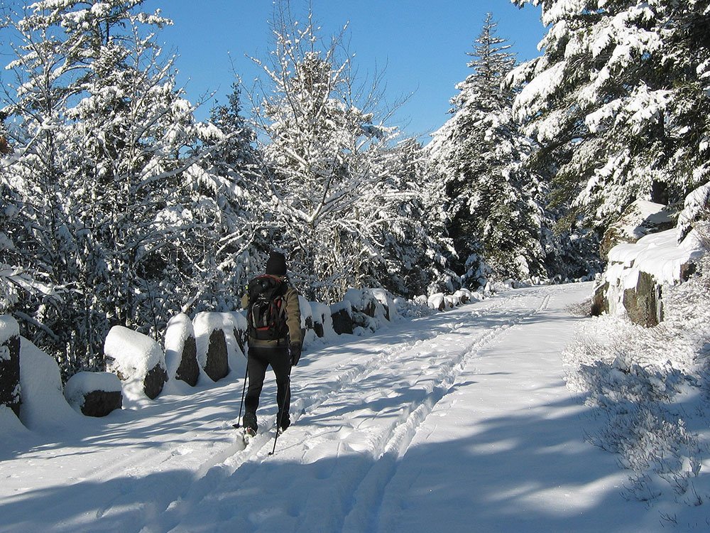

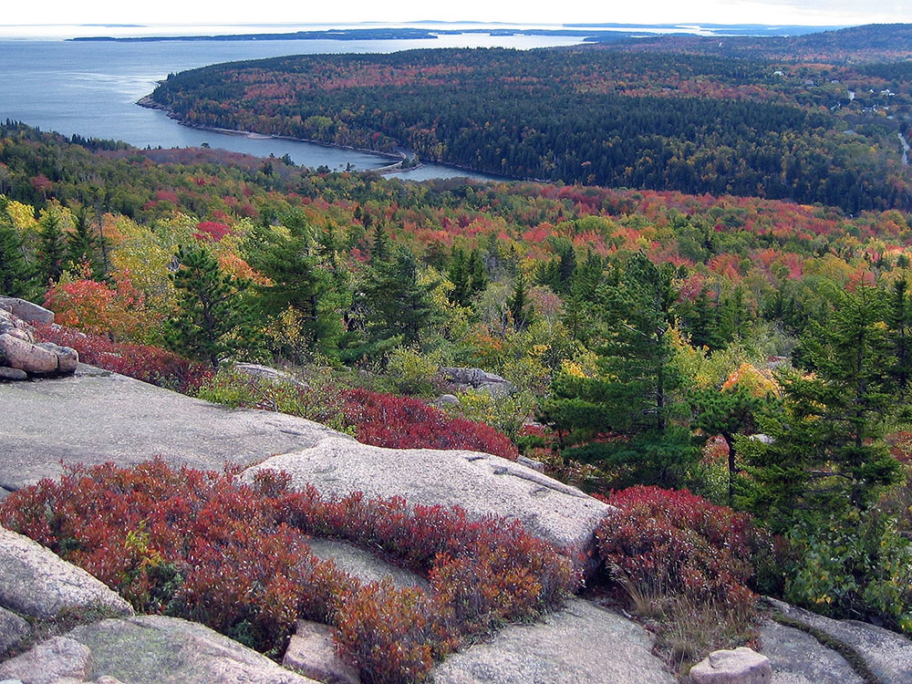

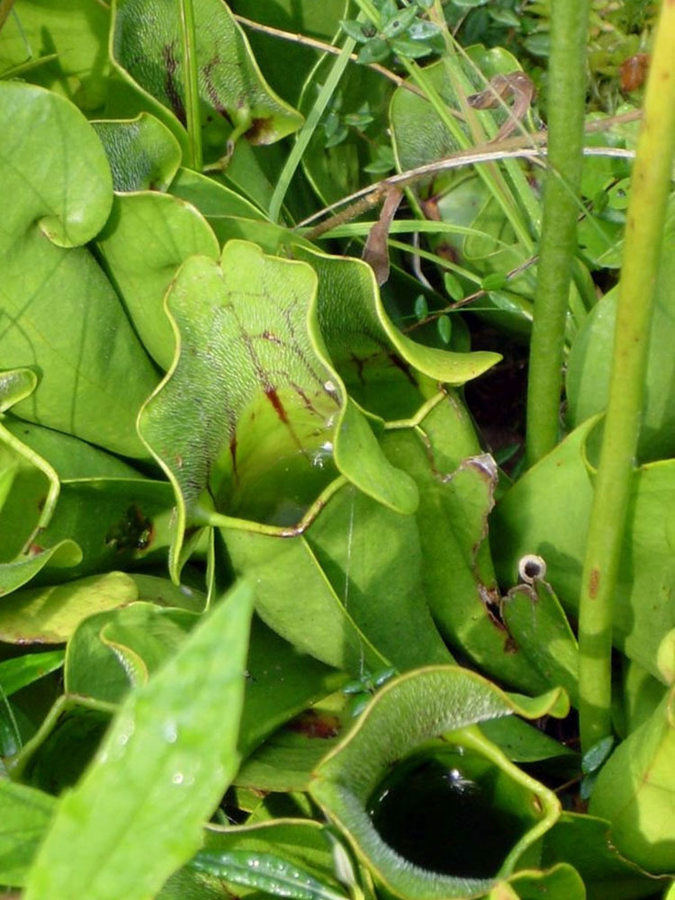